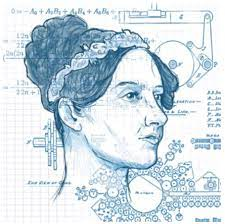
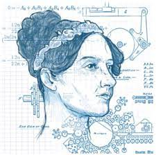
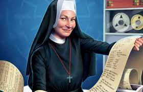
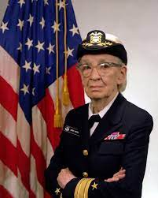

01
ADA 
ADA LOVELACE: Zenbaki kalkulu sinpleak baino gehiagoko ordenagailuetako gaitasuna aurreikusi zuen. Beste batzuek, Babbage barne, kalkulu gaitasun horietan bakarik oinarritu ziren.
Gure historia
Kideak
Idatzi
Izena eman
Hasi
Informatikaren bidea, guk ezagutzen dugun bezala, markatu zuten sei emakume
Hasi irakurtzen
ADA 
ADA LOVELACE: Zenbaki kalkulu sinpleak baino gehiagoko ordenagailuetako gaitasuna aurreikusi zuen. Beste batzuek, Babbage barne, kalkulu gaitasun horietan bakarik oinarritu ziren.
HEDY
HEDY LAMARR: Aktoresa Hollywooden 40 urteetan.
1998an, ElectronicFrontier Foundationak Hedy-ri ta George Antheil-i (berarekin asmakizun gehiagoetan partu hartu zuen pianojolea eta konpositorea) Sari Aitzindariaeman zien ordebagailuen arteko komunikazioan egindako ekarpenengatik. Hedy Lamarr-ek saria jasotzeari uko egin zion.
MARY 
MARY KENNETH: 1965a arte ez zegoen konputazio zientzietan doktore emerik.
JOAN

JOAN CLARKE: 70urtetan zehar bere lana ahaztuta izan da, nahiz eta matematikaria eta krito-analista izan.
Bere gaitasunei esker berehala agerian geratu zen. Garaiaren sexismoa izan arren, bere argitasuna onartu zuten eta Hut 8ko gela txikian beste idazmahai bat jarri zuten berarentzat. (Hut 8=armada alemaniarrak bidalitako mezuak deszifratzen zituen taldea). Momentu horretan arte gelan Tunning eta beste 2 langile zeunden besterik ez.
GRACE 
GRACE HOPPER: Informatikako Historian COBOL Lengoaiaren aurrendaria bezala ezagutzen dugu.
Programazio-lengoia batentzako 1. Konpiladorea garatu zuen. 1969an “Urteko gizona”-ren tituloa eman zioten.
JEAN

JEAN SAMMET:27 urtetan zehar IBM-en lan egin zuen eta COBOL sortu zuen taldeko kidea izan zen.